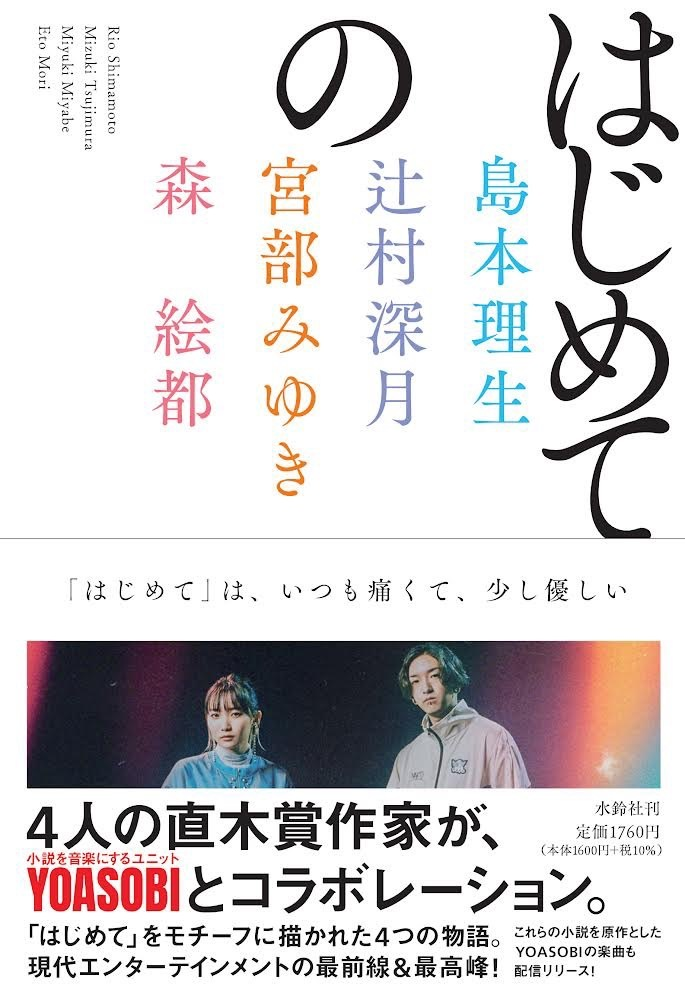
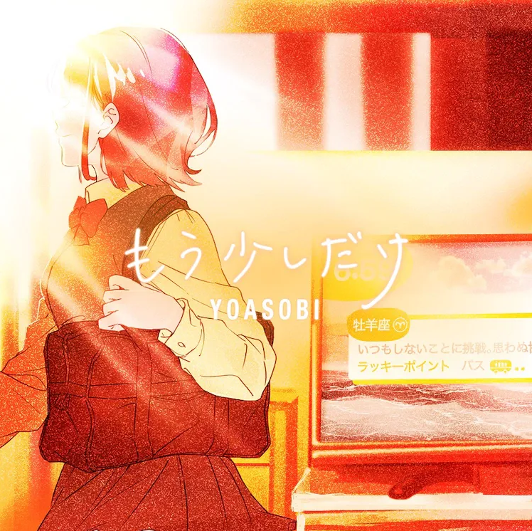

NEWS
2021.12.1

나오키상 수상 작가 4명과의 콜라보레이션이 결정되었다. 기획의 테마는 '처음으로 ○○했을 때에 읽는 이야기'로, 각 작가들이 콜라보레이션을 위해 새로
쓴 신작 소설을 원작으로 삼는다. '처음으로 사람을 좋아하게 되었을 때'를 테마로 한 시마모토 리오(島本理生)의 〈나만의 소유자(私だけの所有者)〉, '처음으로 가출했을 때'를
테마로 한 츠지무라 미즈키의 〈유령(ユーレイ)〉, '처음으로 용의자가 되었을 때'를 테마로 한 미야베 미유키의 〈색이 다른 트럼프(色違いのトランプ)〉, '처음으로 고백했을 때'를
테마로 한 모리 에토(森絵都)의 〈빛의 씨앗(ヒカリノタネ)〉까지 네 작품을 원작으로 2022년 2월 이후 순차적으로 발매 예정. 네 편의 원작은 《처음의(はじめての)》라는 제목의
소설집으로 묶여 2022년 2월 16일 출간된다.
2021.10.25

NHK 어린이 방송 'ひろがれ！いろとりどり'의 테마 송으로 제작된 곡 츠바메(제비)(ツバメ)가 디지털 싱글로 발매되었다. 원작은 오토즈키 나나의 〈작은
제비의 큰 꿈(小さなツバメの大きな夢)〉이고, 10월부터 주제가로 사용되고 있다. YOASOBI with 미도리즈(ミドリーズ) 명의로 발표되었는데, 미도리즈는 이 곡을 위해 결성된
5인의 어린이 유닛이다.
2021.8.8

유튜브 생방송 '요아소비 반성회' 종료 이후 신곡 '다이쇼 로망(大正浪漫)'을 9월 15일 디지털 싱글로 발매하는 것을 발표했다. 원작은 요아소비
콘테스트 vol.2에서 당선된 NATSUMI의 〈다이쇼 로맨스(大正ロマンス)〉. 싱글 발매와 함께 원작 소설을 가필 수정 및 개고한 서적 《다이쇼 로망》이 함께 발간되며,
한정판에는 ikura와 피아니스트 하라미쨩의 특별 세션 영상을 수록한 BD가 동봉된다.